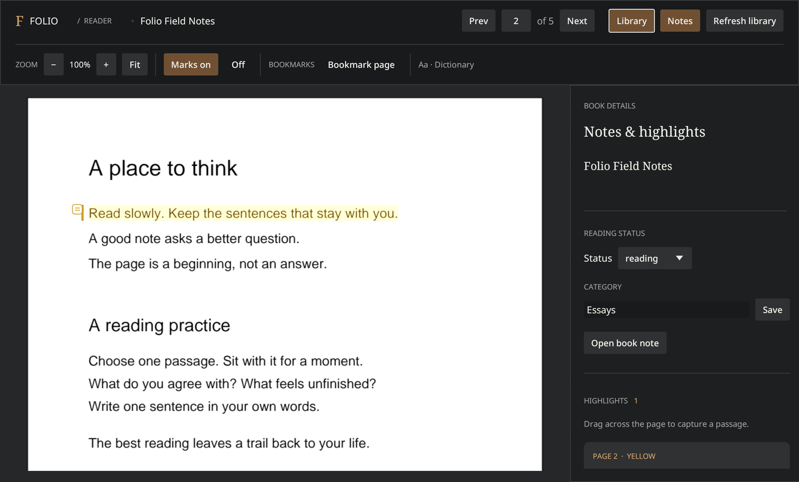

Folio
A quiet, native PDF reader for Linux — your library stays on disk, your notes stay Markdown, and the AI never leaves the machine.


01The problem
Reading PDFs on Linux means choosing between two bad options: a bloated suite you didn't ask for, or a cloud app that wants an account before you've opened a file. Worse is where the thinking goes. Highlights and margin notes — the actual output of reading a hard book — get trapped in a vendor's database, exportable at best as a CSV that loses all context. After a decade of building systems I wanted the opposite: a reader where the valuable artifacts are plain files I own, and the software on top of them is replaceable.
02The approach
Folio is a native Rust app — eframe/egui for the interface, PDFium for rendering, SQLite for
the index — with one structural commitment: Markdown is the truth, the database is a
cache. Every book gets a note record in a folder you choose; metadata, highlights, and
bookmarks live there as human-readable Markdown. The SQLite index is disposable —
folio resync rebuilds it from the notes in seconds. Put the notes folder inside an
Obsidian vault and your reading history becomes part of your notes, not a hostage situation.
Lookups work offline too: Open English WordNet ships with the app, so a click on a word gets a
definition with no network round-trip.
03Trade-offs
book:page:rect, with rectangle coordinates formatted to
four decimals. Same selection, same ID, forever — no auto-increment counters to collide when notes
merge. The format isn't Folio's invention alone: a Python reference implementation generates
conformance fixtures, and the Rust code must reproduce them byte-identically in a test. Two
implementations, one contract.http://127.0.0.1:<port>. Remote addresses, proxies, redirects: refused at the
URL check. Each opt-in request sends a bounded excerpt — the active page, the selected passage,
saved highlights — never the whole book. That's less capable than a cloud assistant with your full
library; it's the point. Privacy here is a hard boundary, not a settings toggle.04Under the hood
The crate splits into a CLI core and an optional gui feature:
contracts.rs pins the shared data shapes and the highlight-ID function,
vault.rs owns the Markdown round-trip, store.rs and
sync.rs keep the SQLite cache honest, coach.rs enforces the localhost
rule, and ui_scale.rs handles HiDPI so a 160% display stays sane. The CLI does
everything the GUI does — folio search, folio define,
folio resync — which keeps the GUI a thin skin. Focus mode strips every panel for
fullscreen reading; copper ribbons mark bookmarked pages. Bundled assets carry their provenance:
PDFium, WordNet, and Noto fonts all ship with license notices. Linux x86_64 builds are packaged
locally today; the public GitHub release is going live soon.